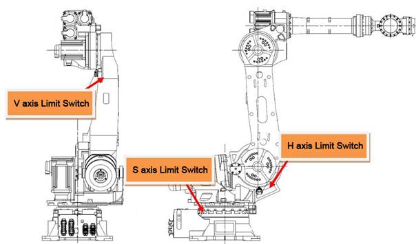
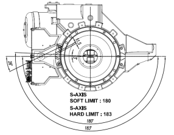
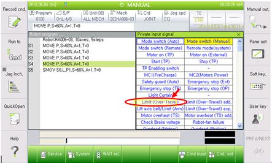
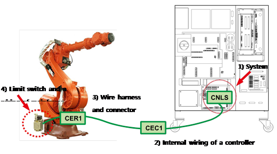
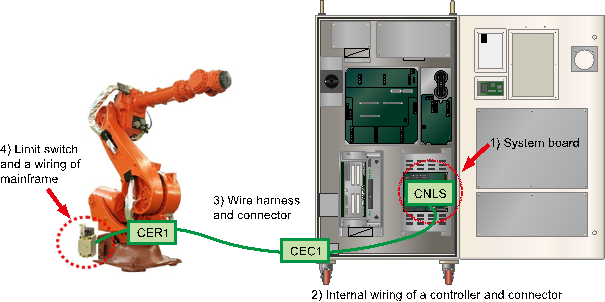
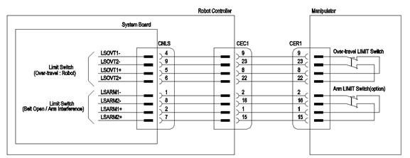
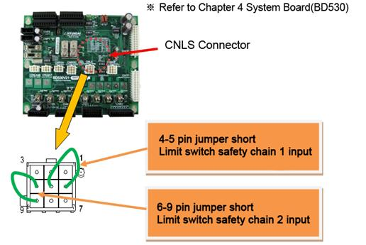
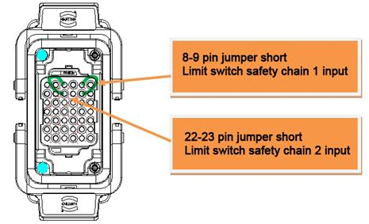
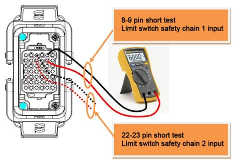

Please make sure the power of a controller has been completely turned off before you connect or remove any cables. Electrocution may cause personal injuries or a property damages.
1.1.1.1. Outline
Limit switch that is installed at the end of operation area of Robot's each axis has been activated. The Robot will be immobilized immediately for a safety reason and will not be operational until it is moved to a safe operation area by an appropriate method.
1.1.1.2. Causes and checking methods
|
(1) Please confirm if the Robot actually went out of operation area. n Actions to be taken when a Robot went out of operation area
(2) If an error occurs though a Robot is in the operation area. n Checking method from a System Board Connector (CNLS) n Checking method from a Wire Harness (CER1 or CEC1) n Checking method by examining a limit switch and internal wiring of main frame |
(1) Please confirm if the Robot actually went out of operation area
Please confirm if the Robot actually went out of operation area. If a soft limit error has occurred simultaneously, the Robot did go out of operation area.
Please take an appropriate action to move the Robot back into the operation area.
Operation area may vary to the each Robot model, so as the installed location of limit switches. Please refer to the corresponding Robot's maintenance manual - "Limitations of Operation area"

Figure 1.1 Installed Locations of Hardware Limit Switches for HS165/HS200 Robot

Figure 1.2 Operation Area for S-axis Limit Switch of HS165/HS200 Robot
n Actions to be taken when a Robot went out of operation area
Please take following actions in order to move a Robot while a hardware limit switch is on. Firstly, enter the system with a manual mode and turn on the enabling switch of Teach Pendant.
From this stage, execute the Motor On command and move the Robot back into the operation area by using a jog key.
(2) If an error occurs though a Robot is in the operation area
Firstly, check if the limit (Over-Travel) is being entered consecutively from the Private input signal window of Teach Pendant.
This window can be accessed by selecting "『[F1]: Service』 → 『1: Monitoring』 → 『2: Input/output Signal』 → 『1: Private input signal』"
A yellow color status on limit (Over-travel) indicates an error status
n Cautions:
On manual mode, a monitoring is enabled only when a Teach Pendant's enabling switch is on. On automatic mode, a monitoring is enabled regardless of a status of enabling switch.

Figure 1.3 Limit (Over-Travel) Monitoring is Displayed from the Private input signal Window
In these cases, cause of this error can be found from the components that are related to the limit switch. As shown in the diagram below, the limit switch is connected to a controller's System Board from a main frame by using "CER1 – CEC1" cables.

(a) Hi5a-S controller

(B) Hi5a-N controller

Figure 1.4 Wirings that are related to a Limit Switch Status Input
Main check points and their orders are
① System Board
② Internal wiring of a controller and connector
③ Wire harness and connector
④ Limit switch and a wiring of mainframe
And please jump the input line of limit switch at an appropriate point in order to check if a limit (Over-Travel) from monitoring windows turns to white color.
Please proceed as follows.
n Checking method from a System Board Connector (CNLS)
|
Warning Please make sure the power of a controller has been completely turned off before you connect or remove any cables. Electrocution may cause personal injuries or a property damages. |
This method uses a CNLS connector of System Board to judge if the board malfunction caused this error.
Please jumper short the pins that are related to the limit switch's input from a CNLS connector as shown below. At this stage, please check the limit (Over-Travel) from the Private input signal monitoring windows.
① If it turned to a white color, System Board malfunction caused this error. Please replace the board.
② If it is still yellow which indicates that the error persists.

n Checking method from a wire harness (CER1 or CEC1)
|
Warning Please make sure the power of a controller has been completely turned off before you connect or remove any cables. Electrocution may cause personal injuries or a property damages. |
This method uses a Wire Harness connector (CER1 or CEC1) to judge if the cable malfunction caused this error.
Please remove CEC1 Wire Harness, and jumper short the pins that are related to the limit switch from a CEC1 connector which is attached to a controller. At this stage, please check the limit (Over-Travel) from the Private input signal monitoring windows.
① If it turned to a white color, internal CEC1 Connector (of a controller) - System Board cable or a connector malfunction caused this error. Please examine them or replace them.
② If it is still yellow which indicates that the error persists, please search a problem that caused this error in an area between the CEC1 connector and the limit switch of main frame.
Please reconnect CEC1 Wire Harness, and remove the CER1 Wire Harness from a main frame. After that, please jumper short the pins that are related to a limit switch from a CER1 connector.
At this stage, please check a limit (Over-Travel) from the Private input signal monitoring windows.
① If it turned to a white color, Wire Harness cable between CER1 Connector-CEC1 Connector or a connector malfunction caused this error. Please examine them or replace them.
② If it is still yellow which indicates that the error persists, please search a problem that caused this error in an area between the mainframe sides's CER1 connector and the limit switch.

n Checking method by examining a limit switch and internal wiring of main frame
|
Warning Please make sure the power of a controller has been completely turned off before you connect or remove any cables. Electrocution may cause personal injuries or a property damages. |
Please remove the CER1 Wire Harness from a main frame, and use a multi meter to run a short (shortage) test to examine the lines that are related to the limit switch from a main frame's CER1 connector.
① If resistance is measures as open status, limit switch or a limit switch – CER1 connector or a connector malfunction is suspected. Please examine or replace them.
② If resistance is measured as short (shortage) status, other parts need to be examined. Please make an enquiry to our office.
